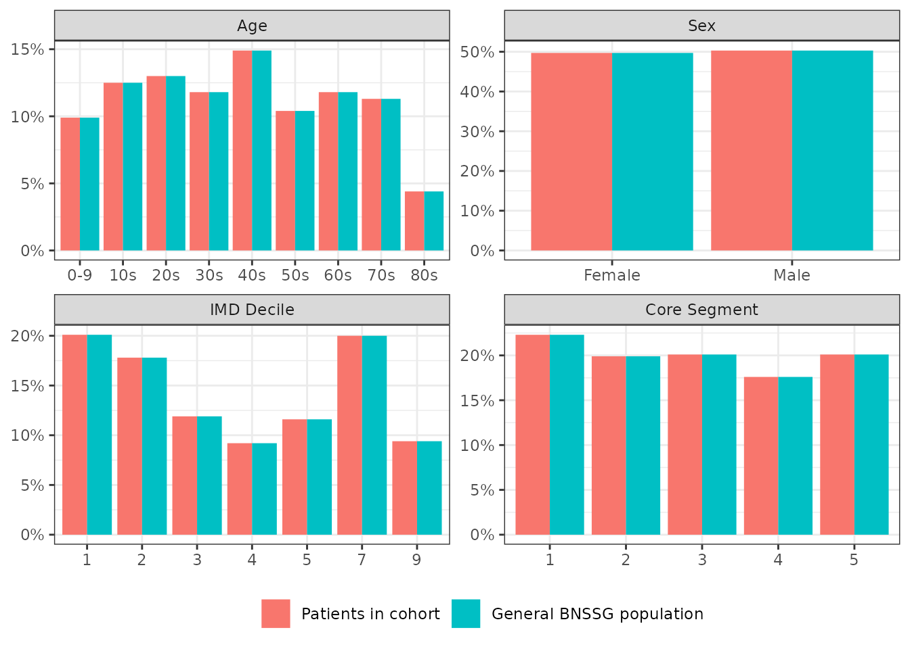

PrePost
PrePost.RmdConnecting to the database
First, generate the artificial data (sqlite files for each database), as follows:
library(PrePost)
# generate example databases
prepost_example()This will create a folder called gendata in your working directory, containing the database files for the example cohort. Next, you can connect to this databases using:
library(PrePost)
library(dplyr)
library(icdb)
# connect to ICB server using this
# srv <- icdb::server("[data_source_name]"]) #see ICDB documentation for details
# in this example we can connect to the synthetic data using
srv <- example_server()Define the cohort - here an example cohort is provided on the example server. All we need is the (pseudo) NHS number and the datetime of interest.
ids <- srv$cohort$COHORT_SYNTH %>% select(nhs_number) %>% pull()
date <- srv$cohort$COHORT_SYNTH %>% select(index_event_time) %>% pull() %>% as.POSIXct()Next we create a PrePost object, defining the window of interest. If
working on the ICB servers you will need to pass the name of the data
source as the parameter srv_name.
Run the descriptive analysis
run_descriptives(obj)
FALSE [1] Running descriptive summary of cohort...
FALSE [1] Finished descriptive summary of cohort...